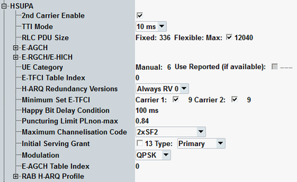

This section describes the common settings of the HSUPA section.
Many of the parameter values are signaled to the UE in the radio bearer setup message. The message contents are specified in 3GPP TS 25.331. For easier identification of the parameters in the standard, the corresponding sections of the radio bearer setup message are mentioned below for most parameters.

Generally enables/disables additional carrier in scenarios with multi-carrier in uplink.
Option R&S CMW-KS405 is required.
Remote command:Selects the transmission time interval (TTI) for the E-DCH. 3GPP TS 25.321 allows TTIs of 2 ms (1 HSUPA subframe comprising 3 slots) or 10 ms duration (1 WCDMA frame comprising 15 slots). Depending on the UE category the UE supports both or only one TTI mode, see Table "UE categories for HSUPA (R9)".
The TTI duration has an impact on the HARQ processes (4 for 10 ms TTI, 8 for 2 ms TTI) and on the structure of the downlink HSUPA channels.
If the secondary uplink carrier is enabled, only 2 ms TTI can be used.
Option R&S CMW-KS401 is required.
Remote command:Selects the RLC PDU size to be signaled to the UE to configure its UL RLC PDU size. Uplink signals with specific RLC PDU size are used in various conformance tests.
Flexible RLC PDU size is only relevant for dual uplink carrier connections. Maximum value for the flexible RLC PDU size can be set and enabled.
Option R&S CMW-KS401 is required.
Option R&S CMW-KS405 is required for dual carrier HSPA.
Remote command:See "E-RGCH and E-HICH Settings"
In signaling mode, the UE category can be either set manually or it can be set automatically according to the UE capability report. In reduced signaling mode, the category must be set manually.
- "Use Reported (if available)" disabled:
The manually configured value is used. - "Use Reported (if available)" enabled:
If no reported value is available, the manually configured value is used.
If a reported value is available, the application uses and displays it.
Note that the terms UE category and E-DCH physical layer category are synonymous in the context of HSUPA. See also "HSUPA UE categories".
Option R&S CMW-KS401 is required.
Remote command:Specifies the E-TFCI table index value signaled to the UE in section "E-DPDCH Info".
The value indicates which table has to be used by the UE for mapping between the E-TFCI and the E-DCH transport block size. The tables 0 and 1 are defined in annex B of 3GPP TS 25.321. In addition, 3GPP specifies table 2 and 3 to be used for 16QAM modulated signals in uplink. The selected table index is automatically increased by RRC for 16QAM HSUPA signals.
Option R&S CMW-KS401 is required.
Remote command:Specifies the "HARQ RV Configuration" value signaled to the UE in section "HARQ Info for E-DCH".
The UE can be ordered to use always redundancy version 0. Or it can be ordered to determine the redundancy version using a table as specified in 3GPP TS 25.212.
Option R&S CMW-KS401 is required.
Remote command:Specifies the E-DCH minimum set E-TFCI value signaled to the UE in section "E-DPDCH Info". The checkbox allows you to enable/disable transmission of the information element.
In a scenario with dual uplink carrier, individual values can be set per carrier.
Option R&S CMW-KS401 is required.
Remote command:Specifies the "happy" bit delay condition value signaled to the UE in section "E-DPCCH Info".
The UE compares this value to the time needed to transmit the E-DCH buffer contents with current transmission parameters. If the transmission time is longer than the delay condition (and some other conditions are fulfilled), the UE sets the happy bit to "unhappy". For details see 3GPP TS 25.321, section 11.8.1.5.
Option R&S CMW-KS401 is required.
Remote command:Specifies the PLnon-max value signaled to the UE in section"E-DPDCH Info".
This parameter limits the amount of puncturing that the UE is allowed to perform. The allowed puncturing in % equals (1-PL)*100.
Option R&S CMW-KS401 is required.
Remote command:Specifies the maximum channelization codes value signaled to the UE in section "E-DPDCH Info".
The value indicates the maximum channelization code configuration the UE can use and thus the maximum data rate. The data rate is increased by using a smaller spreading factor (SF) and by using several channelization codes in parallel for the E-DCH transmission.
- SF64 to SF4: one code, SF 64 to SF 4
- 2xSF4: two codes, SF 4
- 2xSF2: two codes, SF 2
- 2xSF2 and 2xSF4: four codes; two with SF 2 and two with SF 4
Of these values, only a subset of values compatible with the other configured HSUPA parameters is offered. This subset depends on the UE category, the RLC PDU size, the TTI mode, the test mode type and some other parameters. See also Table "UE categories for HSUPA (R9)".
Option R&S CMW-KS401 is required.
Remote command:Specifies the serving grant value and the primary/secondary grant selector signaled to the UE in section "E-DCH Info".
Value 38 means ZERO_GRANT. The checkbox allows you to enable/disable transmission of the information element.
Option R&S CMW-KS401 is required.
Remote command:Selects the E-DCH modulation scheme to be used during HSUPA connection.
Option R&S CMW-KS401 is required.
Remote command:Specifies the mapping of the absolute grant value according to 3GPP TS 25.212.
Option R&S CMW-KS401 is required.
Remote command: